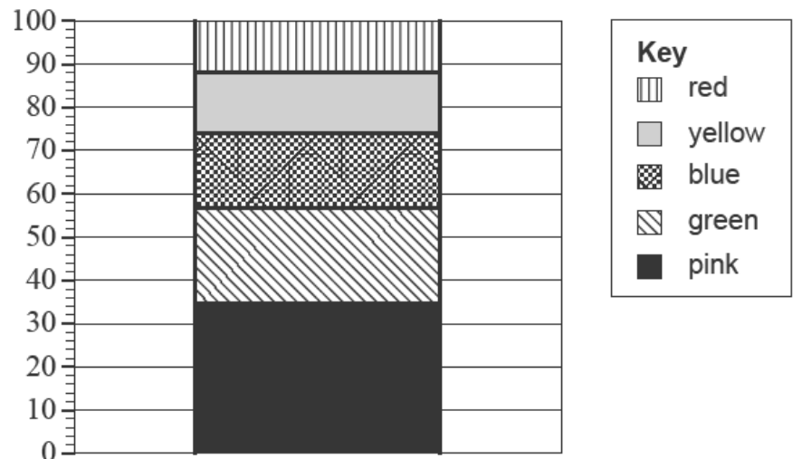
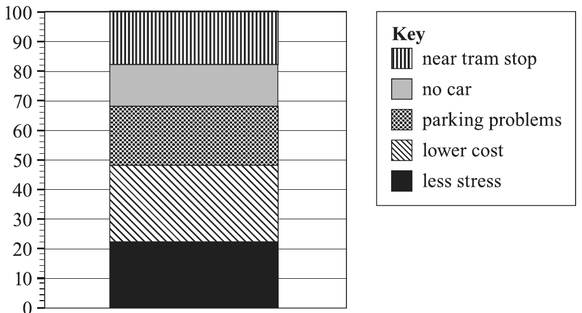

Organising and picturing categorical data
Once you know a variable is categorical (1A), the next job is to organise it in a frequency table, display it in a bar chart or segmented bar chart, and describe what it shows.
By the end of this page you can
- build a frequency table with counts and percentages
- draw and read a bar chart and a percentage segmented bar chart
- identify the mode and describe the distribution in a sentence using percentages
1. The frequency table
A frequency table lists every category, how many times it occurs (the frequency or number), and usually the percentage frequency. Here is the dominant hand of 10 students from a VCAA exam:
| Dominant hand | Number | Percentage (%) |
|---|---|---|
| left | 3 | 30 |
| right | 7 | 70 |
| Total | 10 | 100 |
Left: 3 ÷ 10 × 100 = 30%. The percentages must add to 100 (allow for rounding).
“A few students omitted the total or wrote tally marks instead of numbers, which was not accepted.”VCAA 2023 Exam 2 report, Question 2ai
2. The bar chart
A bar chart has one bar per category. Bar height shows the frequency (or percentage). Bars are the same width and have gaps between them, because the categories are separate groups.
3. The percentage segmented bar chart
A segmented bar chart stacks all the categories into one bar that goes from 0 to 100%. Each segment's length is that category's percentage, and a key tells you which segment is which.
4. Describing the distribution
- The mode (modal category) is the category with the highest frequency. Here it is right.
- Describe in a sentence, quoting percentages and naming the variable:
“The majority of the [group] ([%]) [category], while only [%] [other category].”
Example: The majority of the students (70%) are right-handed, while only 30% are left-handed.
Build it yourself
These are the 10 students from VCAA 2023 NHT Exam 2, Table 1. Count the longest foot for each category, then check. When your counts are right, the percentages and both charts appear.
| Name | Longest foot |
|---|---|
| David | left |
| Lars | left |
| Zach | right |
| Josh | left |
| Lang | left |
| Scotty | right |
| Edward | left |
| Caitlin | left |
| Caroline | right |
| Maggie | right |
| Longest foot | Number | Percentage (%) |
|---|---|---|
| left | ? | |
| right | ? | |
| Total | 10 | 100 |
Video lesson
Watch this for more worked examples of frequency tables, bar charts and segmented bar charts.
Displaying and describing the distributions of categorical variables · YouTube · open on YouTube if the video does not loadReal VCAA exam questions
Attempt each question before checking. After you answer, you will see the solution and, where we have it, what the examiners said.
A group of students were asked to name their favourite colour.
The results are displayed in the percentage segmented bar chart below.

The percentage of students who named blue as their favourite colour is closest to
“Blue 74 − 56 = 18”Common mistake: 18% chose A (14%), which is the size of the yellow segment (88 − 74). Check the key carefully before reading a segment. VCAA 2024 Exam 1 marking guidelines and sample responses, Question 1
Passengers on a tram were surveyed for reasons why they travelled by tram. Each reason, along with the percentage of surveyed passengers who gave that reason, is displayed in the segmented bar chart below.

The combined percentage of surveyed passengers who gave the reason ‘lower cost’ or ‘no car’ is closest to
a. The following data shows the sizes of a sample of 20 oysters rated as small, medium or large.
| small | small | large | medium | medium |
| medium | large | small | medium | medium |
| small | medium | small | small | medium |
| medium | medium | medium | small | large |
i. Use the data above to complete the following frequency table.
Table 2
| Size | Frequency | |
|---|---|---|
| Number | Percentage (%) | |
| small | 35 | |
| medium | 50 | |
| large | 15 | |
| Total | 100 | |
How students went: 95% scored the mark.
What the examiners said:
“This question was well done. A few students omitted the total or wrote tally marks instead of numbers, which was not accepted.”VCAA 2023 Exam 2 report, Question 2ai
ii. Use the percentages in Table 2 to construct a percentage segmented bar chart below. A key has been provided.
Key: small, medium, large. Draw a 0–100% axis on paper, then reveal the model answer.
How students went: 84% scored the mark. The examiners said:
“This question was well done.”VCAA 2023 Exam 2 report, Question 2aii. Model chart drawn by teacher from the report's percentages.
In the year 2021 there were 12 days where a new moon appeared in Sydney Harbour.
For these 12 days the occurrence of the highest high tides (HHT) and lowest low tides (LLT) occurred before, on or after the appearance of the new moon.
These records are displayed in the table below.
Table 3
| LLT | on | before | before | after | after | after |
|---|---|---|---|---|---|---|
| after | after | after | after | after | after | |
| HHT | on | before | before | before | after | after |
| after | on | on | after | after | after |
a. Use the data from Table 3 to complete the following frequency table.
Table 4
| Occurrence | Frequency | |
|---|---|---|
| LLT | HHT | |
| before | ||
| on | ||
| after | ||
| Total | 12 | 12 |
Marking: 1 mark for the LLT column all correct, 1 mark for the HHT column all correct. Check each column adds to 12. VCAA 2024 NHT Exam 2 assessment guide, Question 2a
Summary
- A frequency table lists each category with its number and percentage, plus a Total row.
- Percentage = count ÷ total × 100. Percentages add to 100.
- A bar chart has one bar per category, with gaps between bars.
- A percentage segmented bar chart is one 0–100% bar. Segment size = top − bottom.
- The mode is the most frequent category. Describe using percentages and name the variable.
Print the A4 page below and glue it into your bound reference.
Displaying categorical data
Frequency table
| Category | Number | % |
|---|---|---|
| left | 3 | 30 |
| right | 7 | 70 |
| Total | 10 | 100 |
% = count ÷ total × 100
3 ÷ 10 × 100 = 30%
Describe it
- Name the mode (most frequent category).
- Quote percentages, not just counts.
- Name the variable and the group.
“The majority of the students (70%) are right-handed, while only 30% are left-handed.”
Bar chart
Percentage segmented bar chart
Which display?
- Bar chart: compare frequencies of categories.
- Segmented bar chart: show each category as a share of 100%. Needs a key.
- Both display one categorical variable.
⚠ Exam traps
- Segment size is top − bottom: blue 74 − 56 = 18%. 18% picked the wrong segment (VCAA 2024 Exam 1 Q1).
- “A or B” means add the two segment sizes (VCAA 2025 NHT Exam 1 Q2).
- Frequency tables need a Total and numbers, not tally marks (VCAA 2023 Exam 2 report).
- Check each column adds to the total before moving on.